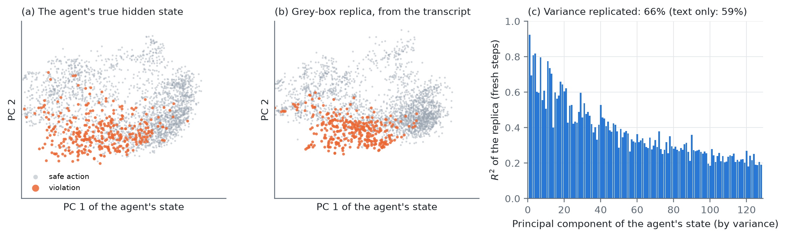
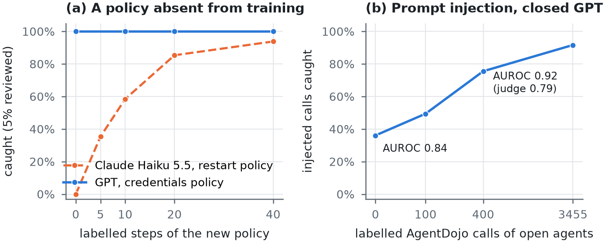
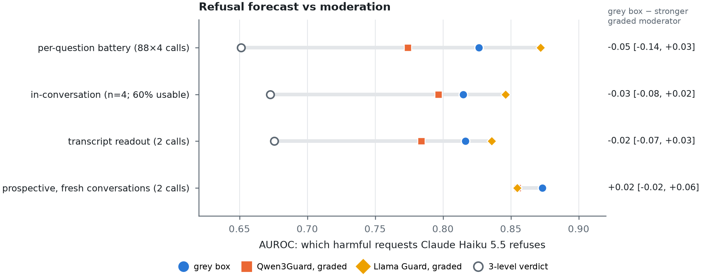
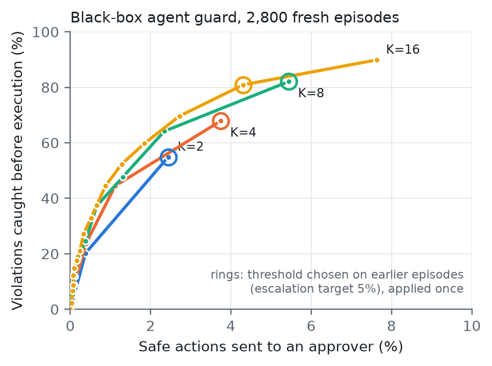

Evidence
Every test was preregistered: hypotheses, data, metrics and pass criteria were written down and hash-locked (SHA-256) before the data it is judged on existed or was scored. The table below is the project's record, reproduced verbatim, including every failure, deviation and correction.
How to read it: pass the preregistered criterion was met;
fail it was not; mixed some endpoints passed and some failed;
not tested the data did not allow the preregistered test. AUROC: 0.5 is chance, 1.0 perfect.
Brackets are 95% bootstrap confidence intervals.
| Test | Outcome | Result | Data | Locked |
|---|---|---|---|---|
| L2 open LLMs (H1–H3) | pass | PASS all, after deviation 1: H1 +0.120 [0.115, 0.126]; H2 +0.057 [0.045, 0.073] (7/8 models); H3 +0.359 [0.310, 0.415]; Holm p < 0.0005 each. First run: H1 valid PASS, H2/H3 invalid (numerical; see note) (results/l2/l2_confirm.json) | held-out 30% of L2 contexts (1,440), 8 models | 22:18 PDT |
| T1 agents (F1–F3; addendum 1: F4–F5) | mixed | Claim (a) CONFIRMED (F1, F2 pass: R16 − WB +0.063 [0.033, 0.094]); claim (b) NOT confirmed (F3 fails: Ψ − WB −0.021 [−0.054, 0.009]); addendum F4 passes (R4+Ψ − WB +0.049 [0.020, 0.080]); F5 fails (R2+Ψ − R16 −0.023 [−0.053, 0.006]) (results/t1/t1_agents_confirm.json) | fresh CAPE episodes (Gemma, seeds 40–43 / 40–41) | lock |
| L1 Othello recovery (E1–E3) | pass | PASS all: E1 R² 0.967 [0.967, 0.968] > 0.90; E2 ΔR² +0.094 [0.086, 0.105], Holm p < 0.0005; E3 Δ occupied acc +0.043 [0.040, 0.046], Holm p < 0.0005. White-box reference 0.983 (results/othello/l1_confirm.json) | 1,000 fresh games, seed 2026 | 2026-10-15 13:53 PDT |
| L3 Claude Haiku 5.5 readout transfer (C1–C3) | pass | all pass: C1 0.993 [0.983, 0.999]; C2 0.997 [0.990, 1.000]; C3 0.935 [0.868, 0.982] (results/l3/) | 192 L2 confirmation contexts, Claude Haiku 5.5 via API | 2026-10-15 23:59 PDT |
| L3b Claude Haiku 5.5: grey box vs text moderation (D1–D3) | pass | D1 pass 0.923 [0.884, 0.957]; D2 (key) pass grey box − moderation +0.176 [0.060, 0.287] (0.827 vs 0.651); D3 not tested (1/40 over-refusals) (results/l3/claude_livebench.json) | 48 calib + 200 eval Live-benchmark conversations, Claude Haiku 5.5 via API | 2026-10-16T01:30:19-07:00 |
| L3c Claude Haiku 5.5: one-call grey box + compliance alarm (E1–E3) | pass | all pass vs the preregistered 3-level verdict: E1 +0.142 [0.081, 0.203] (0.815 vs 0.673); E2 AP +0.230 [0.161, 0.307]; E3 AP +0.081 [0.036, 0.140]. Against GRADED moderators E1 ties (Qwen3Guard +0.018 [−0.043, +0.081]; Llama-Guard −0.031 [−0.082, +0.020]); the alarm gain holds (results/l3/claude_batch.json, l3c_graded_reanalysis.json) | 48 calib + 680 eval (200 L3b + 480 fresh) conversations, Claude Haiku 5.5 via API | 2026-10-16T09:29:27-07:00 |
| L3d Claude Haiku 5.5: transcript-framing grey box (F1–F2) | pass | both pass: F1 grey box − moderation on harmful refusals +0.141 [0.082, 0.199] (0.817 vs 0.676); F2 compliance-risk AP (Claude-moderator) +0.115 [0.076, 0.179] (results/l3/claude_transcript.json) | 44 calib + 500 single-turn eval conversations (L3c's), Claude via API | 2026-10-16T09:55:37-07:00 |
| T2 time: internals at CAPE's decision point vs black box (G1–G3) | pass | all pass: G1 I_dec − R16_ts +0.075 [0.044, 0.106]; G2 R16_dec − I_dec +0.021 [0.011, 0.035]; G3 I_dec − WB_ts +0.138 [0.107, 0.163] (results/t1/t2_time.json) | the 12,130 fresh T1 units, decision point (new) | 2026-10-16T12:54:02-07:00 |
| L3e Claude Haiku 5.5: the Live tool's alarm, prospective (A1–A3) | mixed | A1 pass (alarm precision 0.535 vs 0.274 for the moderator alone, +0.261 [0.215, 0.311]); A2 FAIL (grey box 0.873 vs graded Qwen3Guard 0.855, +0.018 [−0.023, 0.062]); A3 FAIL (multi-turn 0.894 vs 0.906) (results/l3/l3e_tool.json) | 923 fresh conversations (ToxicChat incl. 94 jailbreaks, HarmfulQA, multi-turn) | 2026-10-16T14:06:28-07:00 |
| T3 deployable monitors: LLM judge instead of the oracle checker (K1–K3) | fail | K1 FAIL (judge-scored resampling 0.782 < turn-start probe 0.846, −0.065 [−0.115, −0.019]); K2: probe better (CAPE probe 0.976 > judge on actual action 0.910, −0.067 [−0.104, −0.036] for the judge); K3 FAIL (resampling hurts the action judge, −0.049) (results/t1/t3_deployable.json) | 3,496 of the fresh T1 units (stratified, seed 7) | 2026-10-16T14:50:40-07:00 |
| T4 reader trained on labels vs the agent's internals (M1–M2) | pass | both pass: M1 READER_act − I_dec +0.015 [0.007, 0.026] (0.994 vs 0.979); M2 READER_act − J_act +0.085 [0.052, 0.127] (results/t1/t4_reader.json) | dev 5,493 / fresh 12,130 units; reader Qwen3-8B | 2026-10-16T16:07:08-07:00 |
| T5 agent internals vs transcript reader on unseen scenario families (P1–P2) | pass | P1 pass (reader − agent internals on unseen families −0.007 [−0.014, −0.0001], margin −0.02); P2: agent probe better than zero-shot judge (+0.062 [0.028, 0.101]) (results/t1/t5_family.json) | dev 5,493 / fresh 12,130 units, 5 family folds | 2026-10-16T16:17:52-07:00 |
| T6 reader trained on Gemma, monitoring gpt-oss (Q1) | pass | Q1 pass: Gemma-trained reader on gpt-oss 0.915 vs zero-shot judge 0.833, +0.082 [0.043, 0.129] (results/t1/t6_cross_agent.json) | gpt-oss-20b clean units (5,229; 729 unsafe) | 2026-10-16T17:36:47-07:00 |
| T7 reader monitor on AgentDojo prompt injection, zero transfer training (R1–R2) | pass | R1 pass: reader 0.781 vs zero-shot judge 0.537, +0.249 [0.136, 0.369]; R2 reader better than CAPE's gate: gpt-oss calls as the prereg text specifies, 0.823 vs 0.601, +0.222 [0.143, 0.303] (locked code's broader subset: +0.264 [0.174, 0.359]) (results/t1/t7_agentdojo.json) | 3,455 executed calls, 125 injected (Gemma, gpt-oss) | 2026-10-16T18:09:10-07:00 |
| T8 Claude Haiku 5.5 as an agent, monitored by a reader trained only on Gemma (S1) | not tested | S1 NOT TESTED: 0 unsafe units under the preregistered post-reveal rule (Claude's 68 violations all happen at or without the reveal); see T8b | 1,000 Claude episodes on CAPE-Bench core24b x− | 2026-10-16T18:13:08-07:00 |
| T8b Claude as an agent, all non-read actions (S1b) | pass | S1b pass: Gemma-trained reader on Claude 0.991 vs zero-shot judge 0.633, +0.360 [0.302, 0.413]; 95.6% of violations caught at 5% escalation (judge 0%) (results/t1/t8b_claude_all_actions.json) | 3,128 actions in 991 Claude episodes, 68 unsafe | 2026-10-16T18:48:08-07:00 |
| T9 trained TF-IDF monitor on the reader's own input, same labels (B1 Claude, B2 unseen families) | mixed | B2 pass, B1 FAIL: unseen families reader 0.969 vs TF-IDF 0.950 (+0.019 [0.007, 0.032]); Claude reader 0.991 vs TF-IDF 0.997 (−0.006 [−0.027, +0.007]). AgentDojo (reported) 0.781 vs 0.503 (results/t1/t9_text_baseline.json) | T4–T8b units; reader scores reused | 2026-10-16T19:25:49-07:00 |
| T10 Claude on task families the monitor never saw (C1 pooled, C2 within) | pass | C1, C2 pass (vs zero-shot judge): pooled 0.912 vs 0.570 (+0.342 [0.311, 0.371]); within 0.948 vs 0.633 (+0.318 [0.265, 0.374]). But at the label-free cut the unseen restart family is caught 0/26 (results/t1/t10_claude_unseen_families.json) | T8b units; monitors retrained on Gemma without cons_service_restart (17,465 units) | 2026-10-16T20:16:27-07:00 |
| T11 second closed family: gpt-6-luna as agent, frozen monitors (G1 pooled vs judge, G2 vs tool identity, G3 within tool) | pass | G1, G2, G3 all pass: GPT-6-luna, 3,627 actions, 66 unsafe in 6 families. Reader pooled 0.996 vs judge 0.778 (+0.217 [0.174, 0.265]); vs tool identity +0.141 [0.111, 0.171]; within tool vs judge +0.039 [0.015, 0.066]. 98.5% caught at the label-free 5% cut (judge 37.9%) (results/t1/t11_gpt_agent.json) | 1,000 GPT episodes on CAPE-Bench core24b x− (same order and seed as Claude) | 2026-10-17T04:21:46-07:00 |
| T12 labels needed for a new policy, prospective on GPT (H1 40 vs 0 labels, H2 catch at 40 ≥ 0.5) | mixed | H1 FAILS, H2 passes: with 0 labels of the held-out credentials policy, the reader already caught 18/18 of GPT's violations of it, so added labels had nothing to fix (40 − 0: 0.0). The T10 curve does not replicate on this family (results/t1/t12_new_policy_labels.json) | T11 GPT units; held-out family cred_analytics_token (18 GPT violations) | 2026-10-17T05:00:05-07:00 |
| T13 a closed agent on an external benchmark: GPT-6-luna on AgentDojo, frozen monitors (K1 reader vs judge) | not tested | K1 NOT TESTED: GPT-6-luna resisted the injections (attack success 2.1%), leaving 4 injected calls (minimum 10). Utility on benign tasks 0.862 (results/t1/t13_gpt_agentdojo.json) | AgentDojo v1.2.2 dev split, spot arm, attack + benign | 2026-10-17T05:13:38-07:00 |
| T13b closed agent on AgentDojo without the defense (arm none, dev + conf; K1b reader vs judge) | fail | K1b FAILS: 36 injected calls; reader 0.840 vs zero-shot judge 0.787 within suite (+0.052 [−0.026, +0.130]). TF-IDF 0.335. At the benign-call 5% cut: reader 36%, judge 53% (results/t1/t13b_gpt_agentdojo_none.json) | AgentDojo v1.2.2, both splits, attack + benign | 2026-10-17T05:26:09-07:00 |
| T14 labels of the new policy from open agents, tested on the closed agent (L1 vs judge, L2 vs no labels) | pass | L1, L2 pass: with AgentDojo labels from open agents, the reader on GPT's AgentDojo calls scores 0.922 vs judge 0.787 (+0.136 [0.078, 0.191]) and vs no labels +0.081 [0.044, 0.121]; caught at the benign 5% cut 36% → 92% (results/t1/t14_agentdojo_labels.json) | train: CAPE-Bench + k AgentDojo calls of open agents (T7); test: GPT AgentDojo calls (T13b) | 2026-10-17T05:52:53-07:00 |
| T15 latent replication: does the reader replicate the agent's hidden state? (E1 R² vs text, E2 readouts on the replica) | pass | E1, E2 pass: from the transcript alone, the reader replica reconstructs 66.4% of the agent's decision-state variance (top 128 PCs; text 58.6%; +0.079 [0.075, 0.083]); a probe trained on TRUE states scores 0.987 on the replica vs 0.984 on the true state (+0.003 [−0.002, +0.007]) (results/t1/t15_latent_replication.json) | Gemma-4 decision-point states, 5,493 dev / 12,130 fresh steps | 2026-10-17T11:21:27-07:00 |
| T16 live prevention on a closed agent: the monitor blocks GPT-6-luna's escalated actions in the loop (P1 violation episodes, gated − ungated) | pass | P1 passes: live, the grey-box gate cut GPT-6-luna's episodes with an executed violation from 6.6% to 0.2% (−0.064 [−0.088, −0.044]); 0 violations after a block; goals 47.4% → 45.6%; round trip 89 ms median (results/t1/t16_live_gate.json) | 500 CAPE-Bench scenarios × 2 arms, GPT-6-luna | 2026-10-17T11:24:32-07:00 |
Figures





